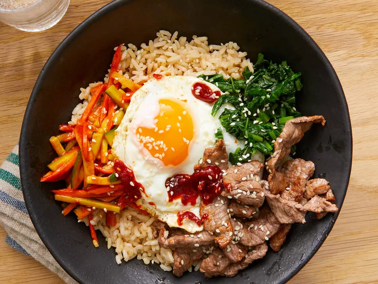

Bimbimbap

Description
This is a simple bibimbap recipe. There is a 30 minute prep time and a 30 minute cook time.
it will give about 4 servings.
Ingredients
- 1 English cucumber, cut into matchsticks
- .25 cups gochujang
- 1 bunch fresh spinach, cut into thin strips
- 1 tbps soy sauce
- 2 tsps olive oil, divided
- 2 carrots, cut into matchsticks
- 1 clove garlic, minced
- 1 pinch red pepper flakes
- 1 lb thinly-sliced beef top round steak
- 4 large eggs
- 4 cups cooked white rice
- 4 tsps toasted sesame oil, divided
- 1 tsps sesame seeds
- 2 tsps gochujang, divided
Steps
- Stir together cucumber pieces and gochujang paste in a bowl; set aside.
- Bring about 2 cups water to a boil in a large nonstick skillet and stir in spinach;
cook until bright green and wilted, 2 to 3 minutes.
- Drain spinach and squeeze out as much moisture as possible;
set spinach aside in a bowl and stir in soy sauce.
- Heat 1 teaspoon olive oil in a large nonstick skillet;
cook and stir carrots until softened, about 3 minutes.
- Stir in garlic and cook just until fragrant, about 1 minute. Stir in cucumber mixture;
sprinkle with red pepper flakes. Set carrot mixture aside in a bowl.
- Brown beef in a clean nonstick skillet over medium heat, about 5 minutes per side; set aside.
- Heat remaining 1 teaspoon olive oil in another nonstick skillet over medium-low heat.
Fry eggs just on one side until yolks are runny, but whites are firm, 2 to 4 minutes.
- Divide cooked rice into 4 large serving bowls; top with spinach mixture, a few pieces of beef, and cucumber mixture.
Place 1 egg atop each serving. Drizzle each bowl with 1 teaspoon sesame oil, a sprinkle of sesame seeds, and a small amount of gochujang paste if desired.
Back to top of page
Back to main page